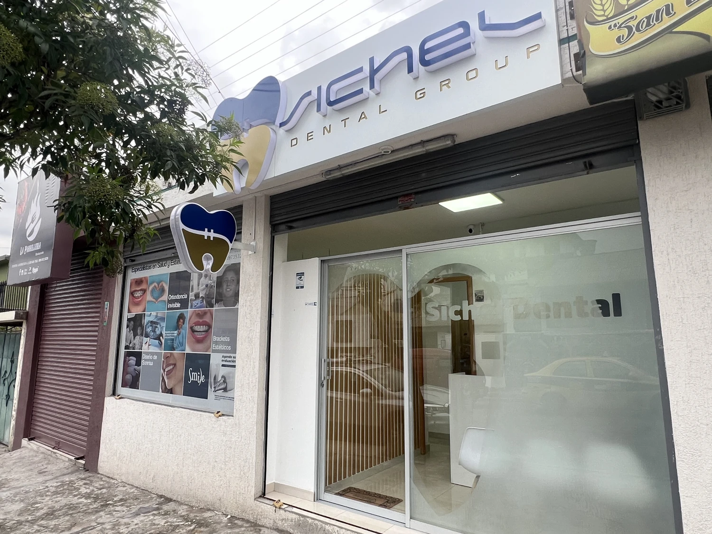

Misión
Brindar atención odontológica integral y personalizada, con diagnósticos claros y un trato humano que ayude a cada paciente a cuidar su salud bucal.
Una atención cercana, clara y enfocada en tu bienestar.

Ubicados en Gaspar de Carvajal y Selva Alegre, en Quito, somos un centro dental dedicado al cuidado de la salud y la estética bucal. Nuestra propuesta integra valoración, prevención y tratamientos personalizados, con especial atención a la ortodoncia invisible.
El Dr. Cristian Imbaquingo y el equipo acompañan a cada paciente a través del diagnóstico y el seguimiento de su tratamiento. Escuchar, explicar con claridad y atender con empatía son parte de nuestra forma de trabajar.
Brindar atención odontológica integral y personalizada, con diagnósticos claros y un trato humano que ayude a cada paciente a cuidar su salud bucal.
Ser un referente de confianza en Quito por la calidad de nuestra atención, el acompañamiento cercano y nuestro compromiso con sonrisas saludables.
Empatía para escucharte. Honestidad al orientarte. Respeto por tus decisiones. Responsabilidad en cada atención y compromiso con tu bienestar.
Promover la prevención, ofrecer planes adaptados a cada diagnóstico, explicar cada etapa y mantener un seguimiento cercano durante el tratamiento.
Cuéntanos qué necesitas. Estamos para escucharte.